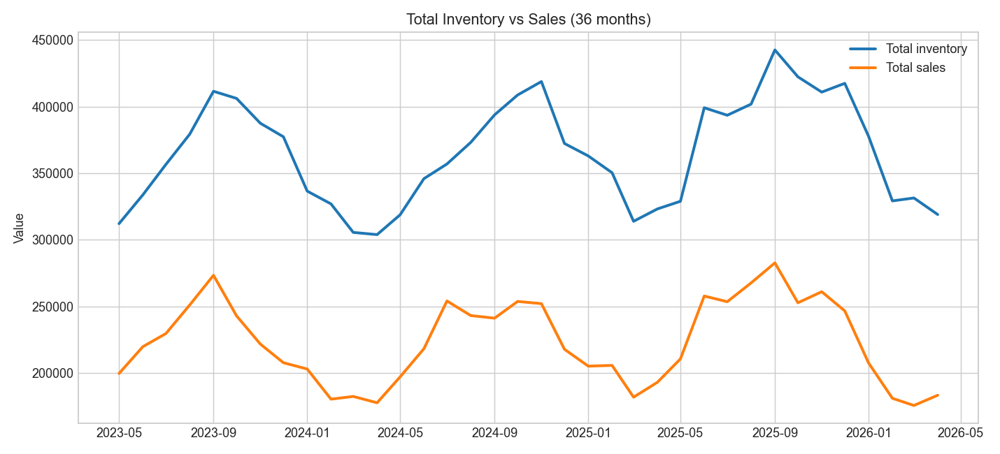

Projects
Portfolio projects will appear here as I build them.

Upwork Reverse Engineered Job Request
My first project, completely AI generated, I have questions...

Fictional bank — COBOL & spending analysis
Transaction feed in COBOL, charts and summaries in Python.

Brick N' Mortar inventory forecast
36-month synthetic sales/inventory history with MoM and YoY comparisons.
Projects Blog
Upwork Reverse Engineered Job Request
My first project, completely AI generated, I have questions...
Fictional bank — COBOL & analysis
Batch-style transaction feed, then Python for category and merchant views.
Brick N' Mortar inventory forecasting
Single-source XLSX, brand-level sell-through rates, and simple 2-month scenarios.